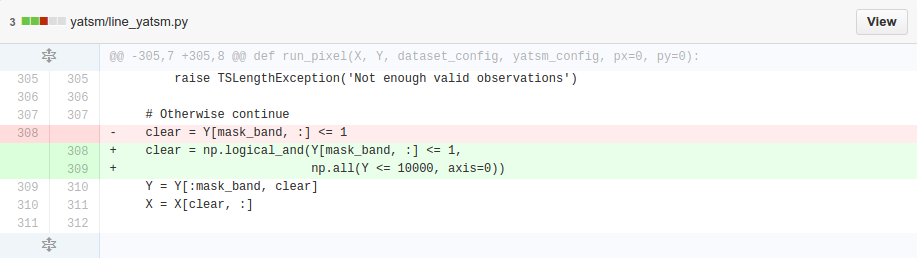

Tip of the Week
Tuesday, October 7th, 2014
Source Code Revision Control
Why? - In general:
- Document what changed
- Document how it changed
- Collaborative work
- Permanent history of versions facilitates comparisons
Why? - In practice:
- Improved communication of changes with others
- Synchronize your work across computers
- Enables regression testing
- Helps fix bugs faster
- Easier than changelogs + diffs
Semantic Versioning
Example: QGIS versions 1.8.0, 2.0.0, 2.0.1, and 2.4.0
- MAJOR version changed from 1.X - 2.X and broke the existing API
- MINOR version changed from 2.0 to 2.4 with new features added
- PATCH version changed from 2.0.0 to 2.0.1 with bug fixes
- See http://semver.org/
Changelogs
- Succinct description of what changed when
- Long lists of changes
- No information on what changed where and how
Diffs and patches
- Summary of how the code changed
- Compare insertions and deletions
- Links first version to current version - "delta-encoding"
- Try in your terminal:
diff file_v1.txt file_v2.txt
- 
Version Control Systems (VCS)
- Git
- Subversion (SVN)
- Mercurial (hg)
- Many, many more (please don't use CVS)
Some Concepts
From wikipedia:
- Repository: location of files and history, often on a server
- Working copy: local copy of files from repository, at specific time or revision (where you do your new work)
- Commit: write your changes in your local history, including how the code changed (diff) and why (changelog)
- Push: send your local history to the repository, enabling it to be shared by others
- Pull or Update: bring changes from the remote repository into your local working copy
Git
A very popularDistributed Version Control System used extensively in open source software (e.g., Linux kernel).
Git
Clone a repository from Github
> git clone https://github.com/try-git/try_git.git
Cloning into 'try_git'...
warning: You appear to have cloned an empty repository.
Checking connectivity... done.
> cd try_git/
Git
Do some work, then add the text file
> echo "some work" > my_file.txt
> git add my_file.txt
Git
Check our status
> git status
On branch master
Initial commit
Changes to be committed:
(use "git rm --cached <file>..." to unstage)
new file: my_file.txt
Git
Commit the change with a message
> git commit -m "I did some work. Wow!"
1 file changed, 1 insertion(+)
create mode 100644 my_file.txt
Git
Check our history
> git log
commit 9e0e514d7b54e45d2d8667472376d125939a780a
Author: Chris Holden <ceholden@gmail.com>
Date: Sun Oct 5 19:23:53 2014 -0400
I did some work. Wow!
Git
Push the changes to our repository
> git push origin master
Git on SCC
- Because of some network firewall reasons, we cannot
pull or push using HTTPS.
- Instead we have to use SSH: